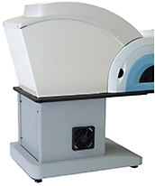

For William B. Trattler, MD, of Center for Excellence in Eye Care in Miami, refractions are all about precision and accuracy.
“The concept of being able to fine tune and really get a precise refraction makes a lot of sense, especially in an age when we’re performing laser vision correction,” Dr. Trattler says. “If you can fine-tune a patient’s prescription, you can really improve their overall quality of vision.”
The PSF Integra (Vmax Vision) uses a point-spread function, a technology that allows users to measure patient prescriptions within 0.05D.
Dr. Trattler, who specializes in refractive, corneal and cataract eye surgery, says he prefers PSF Integra’s method of obtaining a refraction over asking patients to choose between “one and two,” which can be said for both doctors and patients.
“The challenge is that as we get close to the final refraction with a Snellen letter chart, there is often not much of a difference between the two options presented on the phoropter,” Dr. Trattler says. “It can be hard to distinguish which letter is more crisp.”
Rather than using a one-dimensional or two-dimensional object to measure refraction, such as a line or letters, the PSF Integra targets a point. This system helps correct for low and high order aberrations in the final prescription. The company says this helps to simultaneously maximize acuity and contrast sensitivity while also preventing over-minusing.
“The target is novel and allows for easy determination of which option is better, so a patient can easily say which one is crisper and sharper,” Dr. Trattler says.
The PSF Integra’s point-spread function is similar to the company’s PSF Refractor. The primary difference between these devices is the space they occupy. Unlike the PSF Refractor, which requires a traditional phoropter lane, the PSF Integra’s manipulating optics technology gives the patient 20 feet of effective distance. Along with saving space, this technology removes the chance of inducing accommodative response, the company says.
While Dr. Trattler says the device can be used for virtually all patients, he is particularly pleased that the PSF Integra allows him to perform accurate refractions of keratoconus patients.
“Patients with keratoconus are more difficult to refract,” he says. “They have high prescriptions and irregularity in their corneal shape. This makes determining their prescription more difficult. The PSF refractor allows us to more accurately determine the refraction for these patients.” OM